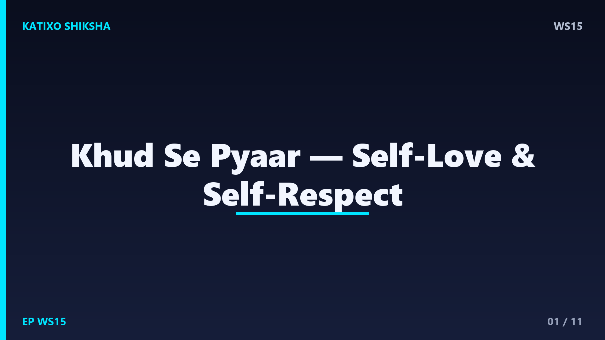
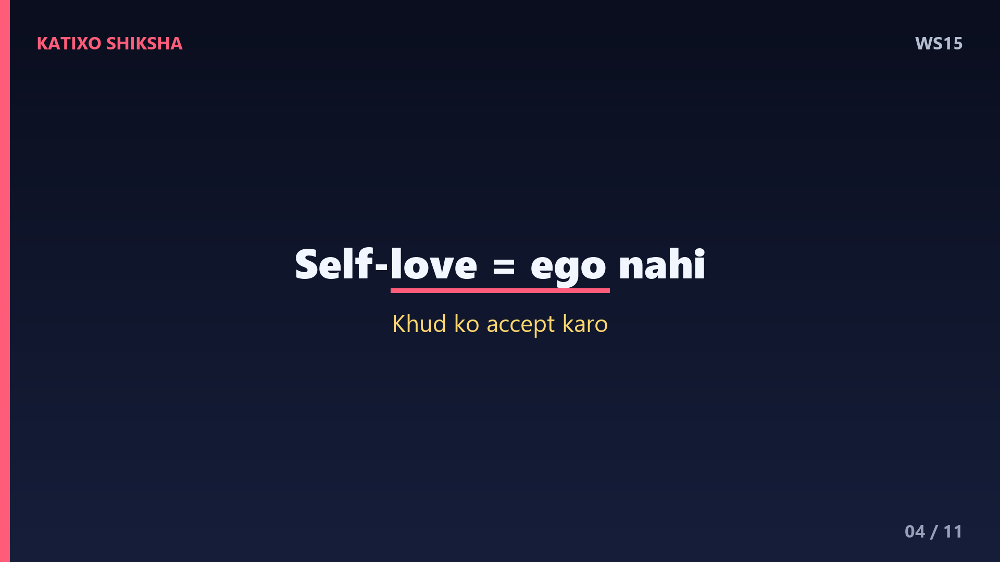

WS15 — Khud Se Pyaar: Self-Love Aur Self-Respect?

Slide 1दोस्तों, एक सच्चा सवाल — तुम दूसरों का कितना ख़याल रखते हो, और खुद का कितना? हम सबकी मदद करते हैं, सबको खुश रखते हैं, पर जब बात अपनी आती है, तो खुद को ही सबसे आख़िर में रखते हैं। आईने में देखकर अपनी ही कमियाँ गिनते हैं। आज Katixo KhojLab की इस कहानी में हम सीखेंगे — खुद से पयार करना, self-love और self-respect, क्यों ये कोई स्वार्थ नहीं, बल्कि ज़िंदगी की सबसे ज़रूरी जड़ है। चलो शुरू करते हैं।
Slide 2एक छोटी सी कहानी सुनो। एक लड़की रोज़ अपने बगीचे के सारे फूलों को पानी देती थी, बड़े प्यार से। पर एक पौधा था बीच में, जो वो हमेशा भूल जाती थी। बाकी सब पौधे खिल रहे थे, और वो एक पौधा मुरझाता जा रहा था। एक दिन उसकी दादी ने पूछा — बेटी, ये पौधा क्यों सूख रहा है? लड़की बोली — पता नहीं दादी, मैं तो सबको पानी देती हूँ। दादी मुस्कुराईं और बोलीं — सबको? या सिर्फ़ बाकियों को?
Slide 3दादी बोलीं — बेटी, ये बीच वाला पौधा तुम हो। तुम पूरी दुनिया को पानी देती हो, हर किसी का ख़याल रखती हो, पर खुद को भूल जाती हो। और जो पौधा खुद सूख रहा हो, वो दूसरों को छाँव कैसे देगा? लड़की की आँखें खुल गईं। दोस्तों, यही पहली lesson है — self-love कोई luxury नहीं, ये ज़रूरत है। तुम वही प्यार दूसरों को दे सकते हो, जो पहले तुम्हारे अपने अंदर भरा हो। ख़ाली बर्तन से कुछ नहीं ढलता।

Slide 4Lesson नंबर दो — self-love का मतलब घमंड नहीं है। बहुत लोग सोचते हैं, खुद से प्यार करना मतलब selfish बन जाना। नहीं। Self-love का मतलब है — खुद को वैसे ही accept करना जैसे तुम हो, अपनी कमियों के साथ। इसका मतलब है खुद से बात करते वक़्त वो नरमी रखना जो तुम अपने सबसे अच्छे दोस्त के साथ रखोगे। तुम गिरोगे, गलतियाँ करोगे — पर खुद को माफ़ करना सीखो। यही असली परिपक्वता है।
Slide 5अब एक practical technique — अपनी self-talk पर ध्यान दो। दिन भर हम खुद से जो बातें करते हैं, वही हमारी असली पहचान बनती है। अगर तुम बार-बार कहोगे — मैं बेकार हूँ, मुझसे कुछ नहीं होता, तो दिमाग उसे सच मान लेगा। आज से एक नियम बनाओ — खुद से वो मत कहो जो तुम किसी बच्चे से नहीं कहोगे। गलती हो जाए तो कहो — कोई बात नहीं, मैं सीख रहा हूँ। ये एक छोटा बदलाव तुम्हारी पूरी सोच पलट देगा।
Slide 6Technique नंबर दो — रोज़ एक छोटा सा self-care का काम करो। Self-love सिर्फ़ feeling नहीं, action है। इसका मतलब है — सही खाना खाना, वक़्त पर सोना, थोड़ी देर अपने लिए निकालना, और ना कहना सीखना जब तुम थके हो। जब तुम खुद को achchhi तरह treat करते हो, तो तुम दुनिया को सिखाते हो कि तुम्हें कैसे treat किया जाए। तुम्हारी अपनी respect वहीं से शुरू होती है, जहाँ तुम खुद की कद्र करते हो।
Slide 7अब बात self-respect की। Self-respect का मतलब है — अपनी value को जानना और उससे कम पर settle ना करना। जब तुम खुद की इज़्ज़त करते हो, तो तुम ऐसे रिश्तों में नहीं रहते जो तुम्हें छोटा महसूस कराएँ। तुम ऐसी बातें बर्दाश्त नहीं करते जो तुम्हारी गरिमा को चोट पहुँचाएँ। याद रखो — लोग तुम्हारे साथ वैसा ही करते हैं जैसा तुम होने देते हो। अपनी इज़्ज़त की पहली ज़िम्मेदारी हमेशा तुम्हारी अपनी है।
Slide 8एक बहुत ज़रूरी बात — comparison की आदत छोड़ो। Social media पर हर कोई perfect दिखता है, और हम अपनी असली ज़िंदगी की तुलना उनके edited highlights से करते हैं। ये एक हारने वाला खेल है। हर फूल अलग वक़्त पर खिलता है। गुलाब को ये नहीं सोचना चाहिए कि मैं कमल जैसा क्यों नहीं। तुम unique हो, तुम्हारी रफ़्तार अलग है। खुद की पिछली तस्वीर से अपनी तुलना करो, किसी और से नहीं।
Slide 9और एक powerful आदत — रोज़ रात को अपनी तीन अच्छी बातें याद करो। हम अपनी गलतियाँ तो याद रखते हैं, पर अपनी जीत भूल जाते हैं। आज तुमने क्या अच्छा किया? किसी की मदद की? एक मुश्किल काम पूरा किया? खुद को थोड़ी shabashi दो। ये कोई घमंड नहीं, ये अपने आप को देखना है। जब तुम रोज़ अपने अंदर अच्छाई ढूँढोगे, तो धीरे-धीरे तुम खुद से दोस्ती कर लोगे। और ये दोस्ती ज़िंदगी भर साथ रहती है।
Slide 10चलो आज की तीन सबसे बड़ी सीख याद कर लें। पहली — खुद को पहले पानी दो, क्योंकि सूखा पौधा किसी को छाँव नहीं दे सकता। दूसरी — अपनी self-talk बदलो, खुद से उतनी ही नरमी से बात करो जितनी अपने सबसे अच्छे दोस्त से। और तीसरी — किसी से तुलना मत करो, हर फूल अपने वक़्त पर खिलता है। ये तीन बातें तुम्हें खुद का सबसे अच्छा दोस्त बना देंगी।
Slide 11याद रखना दोस्तों — इस पूरी दुनिया में एक रिश्ता ऐसा है जो जन्म से मौत तक तुम्हारे साथ रहेगा, और वो है खुद के साथ तुम्हारा रिश्ता। उसे प्यार से, इज़्ज़त से सँभालो। तुम जैसे हो, काफ़ी हो। आज से अपने उस भूले हुए पौधे को पानी देना शुरू करो। अगर ये कहानी तुम्हारे दिल को छू गई, तो like, share, और Katixo KhojLab को subscribe करना मत भूलना। मिलते हैं अगली कहानी में!